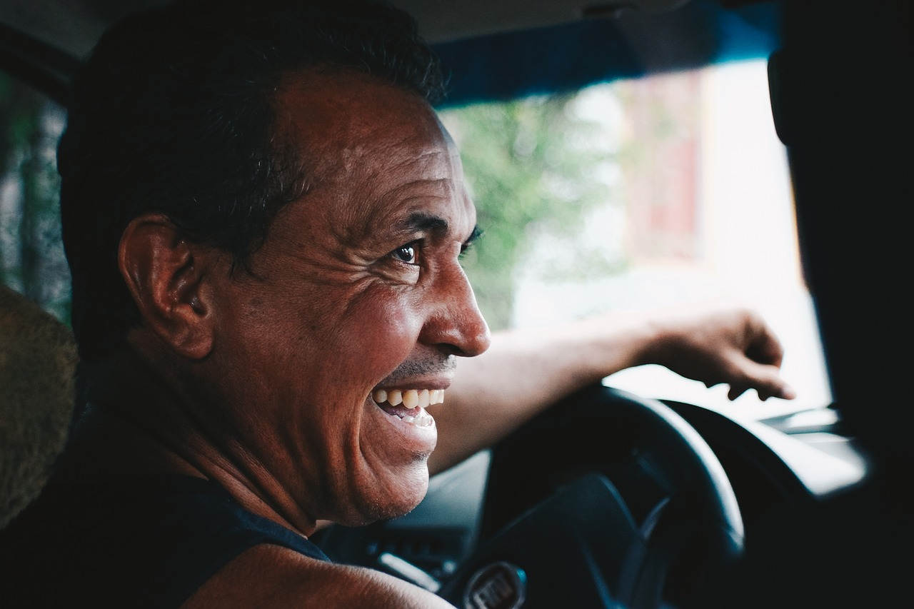

Kumar Dema
Przewodnik z 30-letnim doświadczeniem w prowadzeniu wycieczek po Azji Południowej. Pasjonat przyrody i mistrz pieszych wędrówek.

Lamara Abasi
Ekspertka w organizowaniu wycieczek po terenach Kaukazu. Jej celem jest dostarczenie turystom niezapomnianych przeżyć.

Santiago Gonzalez
Specjalista w organizowaniu wycieczek po całej Ameryce Południowej. Z pasją opowiada o bogatej latynoskiej kulturze.

Aleksander Nowak
Doświadczony ekspert w górskich wędrówkach, który prowadzi grupy przez najpiękniejsze i najbardziej wymagające szlaki wysokogórskie. Dzięki jego wiedzy i pasji każda wyprawa staje się niezapomnianą przygodą w sercu natury.

Katarzyna Lis
Pasjonatka tropikalnych lasów równikowych, która prowadzi po ich najbardziej fascynujących i dzikich zakątkach. Jej wiedza o roślinności, zwierzętach i ekosystemach sprawia, że każda wyprawa staje się pełną odkryć podróżą w serce natury.

Mirosław Kowal
Ekspert w historii pradawnych cywilizacji, który zabiera podróżników do miejsc pełnych tajemnic i niezwykłych odkryć. Dzięki jego wiedzy o kulturach, które kształtowały naszą cywilizację, każda wycieczka staje się fascynującą podróżą w czasie.
 Biuro Podróży Kraken
Biuro Podróży Kraken